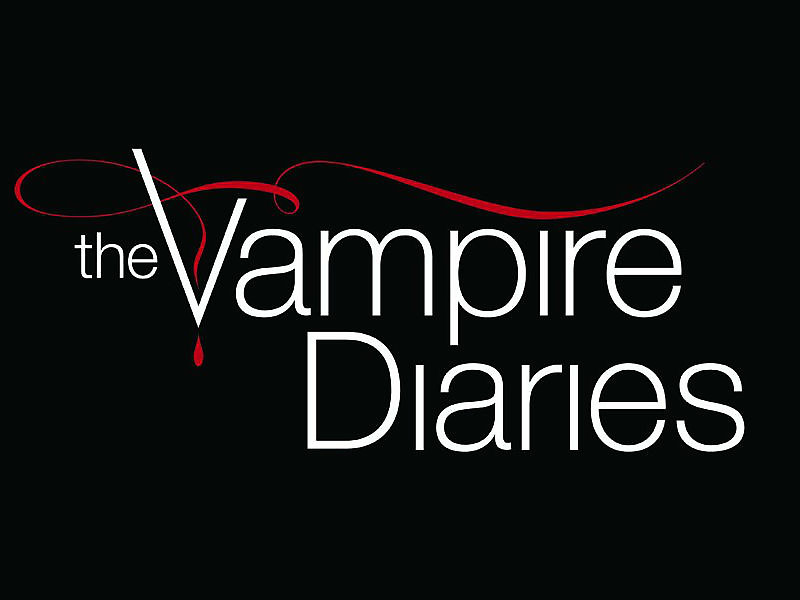
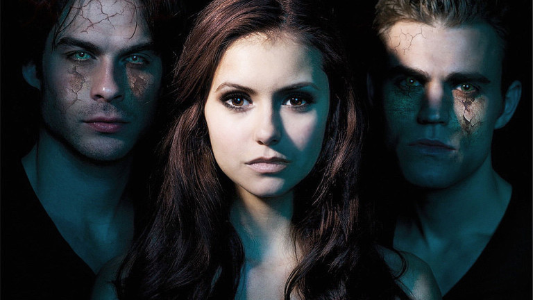

|  | Elenco | Temporadas | Contáctanos | ||||||
| Diario de Vampiros | |||||||||
Introducción
The Vampire Diaries (El diario de los vampiros o Diarios de vampiros en Hispanoamérica y Crónicas vampíricas en España) es una serie de televisión estadounidense de género dramático, creada por Kevin Williamson y basada en la saga de L. J. Smith. La trama gira en torno a la vida de Elena, sus amigos y otros habitantes de una pequeña ciudad de Virginia, llamada Mystic Falls. Elena Gilbert (Nina Dobrev), es una adolescente joven de la cual se enamoran dos hermanos vampiros, Stefan Salvatore (Paul Wesley), y su hermano Damon Salvatore (Ian Somerhalder). Elena es idéntica a Katherine, la mujer que los convirtió en vampiros y que jugó con el amor que ambos sentían por ella. The Vampire Diaries fue estrenada en el canal The CW el 10 de septiembre del año 2009 con su primera temporada,1 y el último episodio fue emitido el 10 de marzo de 2017 dándole fin a la octava y última temporada.
|  |
Sigueme en todas mis redes:
Facebook Instagram